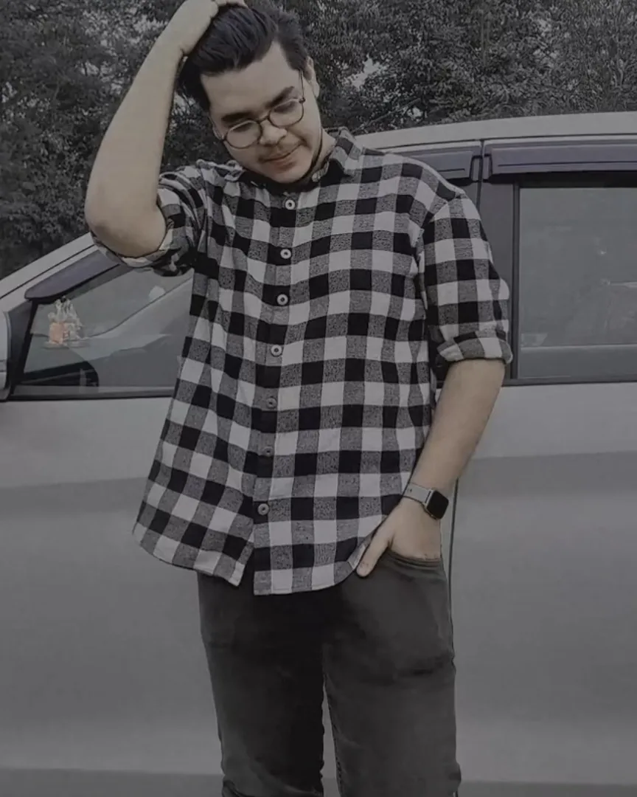
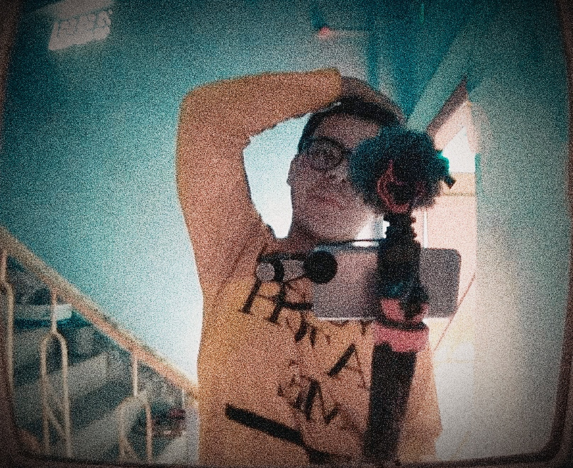

welocome to the world of lostboy
hello!! so Lostboy production is which started by me aka Lostboy, besically iam a lifestyle vlogger, flimmaker,editor,graphic designer.one think i want clarify that
im not pro in this above fileds but im learner i learn day by day and improve myself.my journey start im at 12 grade year of 2019, i have no idea back than that what is vlogging how to shoot video oe editing , i have zero knowlage about.But i do admire some youtuber/vlogger im not mention their in my website
but yea ilove their vlogging and they inspired me to do vlog. i dont know if its real or not that im the first vlogger from my home town. so besically know ido vlogging but i also shift my passion in flim-making and i'm now passionate abot editing.
im a independent video creator not working with anyone yet but hopefully do in future.In LostBoy Production i produced my own vlogs and uploading in my youtube channel. soon i started my motovlogging segment so wait untill i upload it...sayonaara.....

THE
LOSTBOY

MY
FIRST VLOGGING SETUP
This is the picture of me and my first ever vlogging setup back than i somehow manage this this mobile vlogging acssessories, this pic looks like a nostalgia to me.I discovers that i can make vlogging as my hobbie or passion.
EDITING WORK SPACE
This is my current work station, i'll spent my most of the time of a day in my workstation.